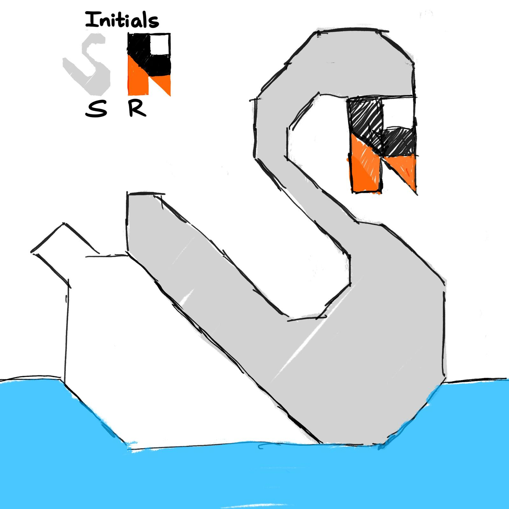

Please use a browser that supports "canvas"

Clear Canvas
Drawing Mode:
Squares
Triangles
Circles
Draw Picture
Rainbow Mode: OFF
Shape Color:
Red
Green
Blue
Shape Size:
(Circles) Segment Count:
Awesome Features:
- Rainbow mode: auto cycles through all colors + shows if its on/off